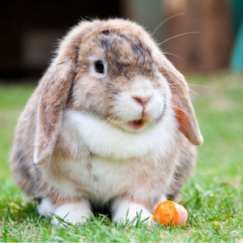
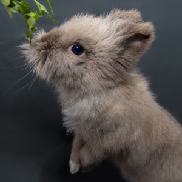
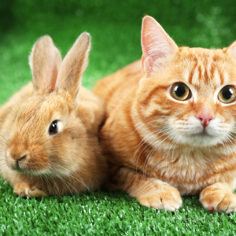

Conejo Marron con Blanco
Este conejo marrón exhibe un pelaje suavemente cálido y una presencia encantadora,
con ojos curiosos que resaltan su naturaleza juguetona y cariñosa. Su elegancia y
ternura lo convierten en un compañero cautivador.

Conejo Marron
El bebé conejo marrón irradia ternura con su pelaje suave y cálido,
sus ojos curiosos reflejan su asombro por el mundo, y su pequeño tamaño
lo hace aún más adorable y delicado.
Conejo Blanco con Lentes
El conejo blanco posee un pelaje puro como la nieve, que contrasta con sus
ojos curiosos y nariz rosada, reflejando su inocencia y encanto. Su presencia
serena y suave transmite una sensación de tranquilidad y dulzura.
Conejo Navideño
El conejo navideño es una figura encantadora con un pelaje suave y festivamente
decorado, que evoca la alegría de la temporada. Con su nariz rosada y ojos
brillantes, parece llevar consigo el espíritu de la Navidad en su mirada.

Conejo Gris
El conejo gris destaca por su pelaje de tono suave y elegante, que resalta su
figura ágil y su expresión serena. Sus ojos curiosos y orejas alerta reflejan su
inteligencia y cautela en su entorno.

Conejo Amarillo
El conejo amarillo brilla con un pelaje radiante como el sol, irradiando vitalidad
y energía. Su aspecto alegre y su actitud juguetona se reflejan en su mirada
traviesa y en su disposición para explorar el mundo con entusiasmo.